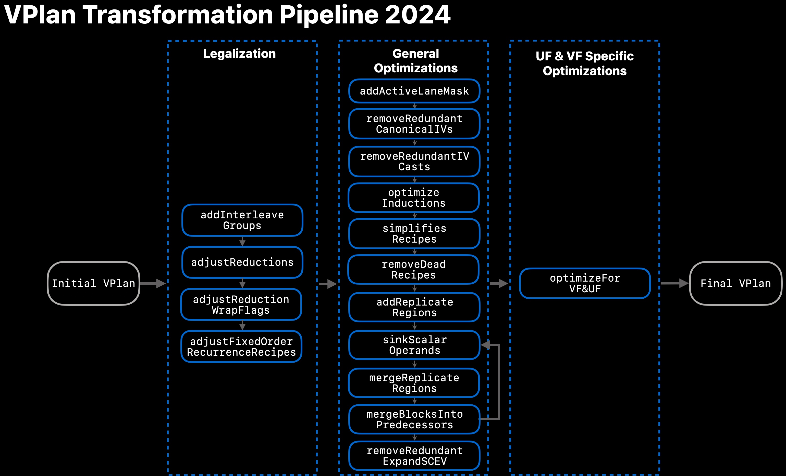
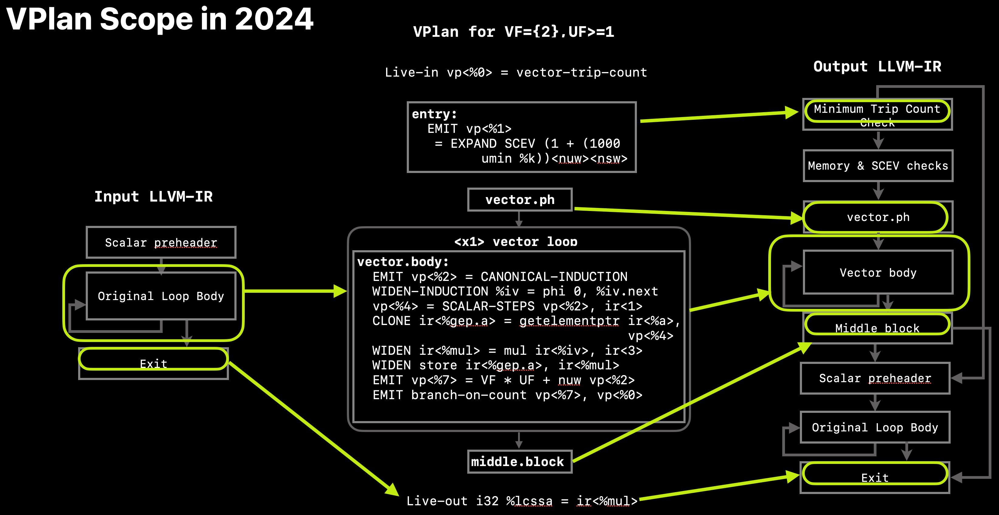

Vectorization Plan#
Abstract#
The vectorization transformation can be rather complicated, involving several potential alternatives, especially for outer-loops [1] but also possibly for innermost loops. These alternatives may have significant performance impact, both positive and negative. A cost model is therefore employed to identify the best alternative, including the alternative of avoiding any transformation altogether.
The Vectorization Plan is an explicit model for describing vectorization candidates. It serves for both optimizing candidates including estimating their cost reliably, and for performing their final translation into IR. This facilitates dealing with multiple vectorization candidates.
Current Status#
VPlan is currently used to drive code-generation in LoopVectorize. VPlans are constructed after all cost-based and most legality-related decisions have been taken. As def-use chains between recipes are now fully modeled in VPlan, VPlan-based analyses and transformations are used to simplify and modularize the vectorization process [10]. Those include transformations to
Legalize the initial VPlan, e.g. by introducing specialized recipes for reductions and interleave groups.
Optimize the legalized VPlan, e.g. by removing redundant recipes or introducing active-lane-masks.
Apply unroll- and vectorization-factor specific optimizations, e.g. removing the backedge to reiterate the vector loop based on VF & UF.
Refer to VPlan Transformation Pipeline in 2024 for an overview of the current transformation pipeline.
Note that some legality checks are already done in VPlan, including checking if all users of a fixed-order recurrence can be re-ordered. This is implemented as a VPlan-to-VPlan transformation that either applies a valid re-ordering or bails out marking the VPlan as invalid.
{kind=link}

VPlan Transformation Pipeline in 2024#
VPlan currently models the complete vector loop, as well as additional parts of the vectorization skeleton. Refer to Scope modeled in VPlan in 2024 for an overview of the scope covered by VPlan.
{kind=link}

Scope modeled in VPlan in 2024#
High-level Design#
Vectorization Workflow#
VPlan-based vectorization involves three major steps, taking a « scenario-based approach » to vectorization planning:
Legal Step: check if a loop can be legally vectorized; encode constraints and artifacts if so.
Plan Step:
Build initial VPlans following the constraints and decisions taken by Legal Step 1, and compute their cost.
Apply optimizations to the VPlans, possibly forking additional VPlans. Prune sub-optimal VPlans having relatively high cost.
Execute Step: materialize the best VPlan. Note that this is the only step that modifies the IR.
Design Guidelines#
In what follows, the term « input IR » refers to code that is fed into the vectorizer whereas the term « output IR » refers to code that is generated by the vectorizer. The output IR contains code that has been vectorized or « widened » according to a loop Vectorization Factor (VF), and/or loop unroll-and-jammed according to an Unroll Factor (UF). The design of VPlan follows several high-level guidelines:
Analysis-like: building and manipulating VPlans must not modify the input IR. In particular, if the best option is not to vectorize at all, the vectorization process terminates before reaching Step 3, and compilation should proceed as if VPlans had not been built.
Align Cost & Execute: each VPlan must support both estimating the cost and generating the output IR code, such that the cost estimation evaluates the to-be-generated code reliably.
Support vectorizing additional constructs:
Outer-loop vectorization. In particular, VPlan must be able to model the control-flow of the output IR which may include multiple basic-blocks and nested loops.
SLP vectorization.
Combinations of the above, including nested vectorization: vectorizing both an inner loop and an outer-loop at the same time (each with its own VF and UF), mixed vectorization: vectorizing a loop with SLP patterns inside [4], (re)vectorizing input IR containing vector code.
Function vectorization [2].
Support multiple candidates efficiently. In particular, similar candidates related to a range of possible VF’s and UF’s must be represented efficiently. Potential versioning needs to be supported efficiently.
Support vectorizing idioms, such as interleaved groups of strided loads or stores. This is achieved by modeling a sequence of output instructions using a « Recipe », which is responsible for computing its cost and generating its code.
Encapsulate Single-Entry Single-Exit regions (SESE). During vectorization such regions may need to be, for example, predicated and linearized, or replicated VF*UF times to handle scalarized and predicated instructions. Innerloops are also modelled as SESE regions.
Support instruction-level analysis and transformation, as part of Planning Step 2.b: During vectorization instructions may need to be traversed, moved, replaced by other instructions or be created. For example, vector idiom detection and formation involves searching for and optimizing instruction patterns.
Definitions#
The low-level design of VPlan comprises of the following classes.
- LoopVectorizationPlanner:
A LoopVectorizationPlanner is designed to handle the vectorization of a loop or a loop nest. It can construct, optimize and discard one or more VPlans, each VPlan modelling a distinct way to vectorize the loop or the loop nest. Once the best VPlan is determined, including the best VF and UF, this VPlan drives the generation of output IR.
- VPlan:
A model of a vectorized candidate for a given input IR loop or loop nest. This candidate is represented using a Hierarchical CFG. VPlan supports estimating the cost and driving the generation of the output IR code it represents.
- Hierarchical CFG:
A control-flow graph whose nodes are basic-blocks or Hierarchical CFG’s. The Hierarchical CFG data structure is similar to the Tile Tree [5], where cross-Tile edges are lifted to connect Tiles instead of the original basic-blocks as in Sharir [6], promoting the Tile encapsulation. The terms Region and Block are used rather than Tile [5] to avoid confusion with loop tiling.
- VPBlockBase:
The building block of the Hierarchical CFG. A pure-virtual base-class of VPBasicBlock and VPRegionBlock, see below. VPBlockBase models the hierarchical control-flow relations with other VPBlocks. Note that in contrast to the IR BasicBlock, a VPBlockBase models its control-flow successors and predecessors directly, rather than through a Terminator branch or through predecessor branches that « use » the VPBlockBase.
- VPBasicBlock:
VPBasicBlock is a subclass of VPBlockBase, and serves as the leaves of the Hierarchical CFG. It represents a sequence of output IR instructions that will appear consecutively in an output IR basic-block. The instructions of this basic-block originate from one or more VPBasicBlocks. VPBasicBlock holds a sequence of zero or more VPRecipes that model the cost and generation of the output IR instructions.
- VPRegionBlock:
VPRegionBlock is a subclass of VPBlockBase. It models a collection of VPBasicBlocks and VPRegionBlocks which form a SESE subgraph of the output IR CFG. A VPRegionBlock may indicate that its contents are to be replicated a constant number of times when output IR is generated, effectively representing a loop with constant trip-count that will be completely unrolled. This is used to support scalarized and predicated instructions with a single model for multiple candidate VF’s and UF’s.
- VPRecipeBase:
A pure-virtual base class modeling a sequence of one or more output IR instructions, possibly based on one or more input IR instructions. These input IR instructions are referred to as « Ingredients » of the Recipe. A Recipe may specify how its ingredients are to be transformed to produce the output IR instructions; e.g., cloned once, replicated multiple times or widened according to selected VF.
- VPValue:
The base of VPlan’s def-use relations class hierarchy. When instantiated, it models a constant or a live-in Value in VPlan. It has users, which are of type VPUser, but no operands.
- VPUser:
A VPUser represents an entity that uses a number of VPValues as operands. VPUser is similar in some aspects to LLVM’s User class.
- VPDef:
A VPDef represents an entity that defines zero, one or multiple VPValues. It is used to model the fact that recipes in VPlan can define multiple VPValues.
- VPInstruction:
A VPInstruction is a recipe characterized by a single opcode and optional flags, free of ingredients or other meta-data. VPInstructions also extend LLVM IR’s opcodes with idiomatic operations that enrich the Vectorizer’s semantics.
- VPTransformState:
Stores information used for generating output IR, passed from LoopVectorizationPlanner to its selected VPlan for execution, and used to pass additional information down to VPBlocks and VPRecipes.
The Planning Process and VPlan Roadmap#
Transforming the Loop Vectorizer to use VPlan follows a staged approach. First, VPlan was only used to record the final vectorization decisions, and to execute them: the Hierarchical CFG models the planned control-flow, and Recipes capture decisions taken inside basic-blocks. Currently, VPlan is used also as the basis for taking these decisions, effectively turning them into a series of VPlan-to-VPlan algorithms. Finally, VPlan will support the planning process itself including cost-based analyses for making these decisions, to fully support compositional and iterative decision making.
Some decisions are local to an instruction in the loop, such as whether to widen it into a vector instruction or replicate it, keeping the generated instructions in place. Other decisions, however, involve moving instructions, replacing them with other instructions, and/or introducing new instructions. For example, a cast may sink past a later instruction and be widened to handle first-order recurrence; an interleave group of strided gathers or scatters may effectively move to one place where they are replaced with shuffles and a common wide vector load or store; new instructions may be introduced to compute masks, shuffle the elements of vectors, and pack scalar values into vectors or vice-versa.
In order for VPlan to support making instruction-level decisions and analyses, it needs to model the relevant instructions along with their def/use relations. This too follows a staged approach: first, the new instructions that compute masks are modeled as VPInstructions, along with their induced def/use subgraph. This effectively models masks in VPlan, facilitating VPlan-based predication. Next, the logic embedded within each Recipe for generating its instructions at VPlan execution time, will instead take part in the planning process by modeling them as VPInstructions. Finally, only logic that applies to instructions as a group will remain in Recipes, such as interleave groups and potentially other idiom groups having synergistic cost.